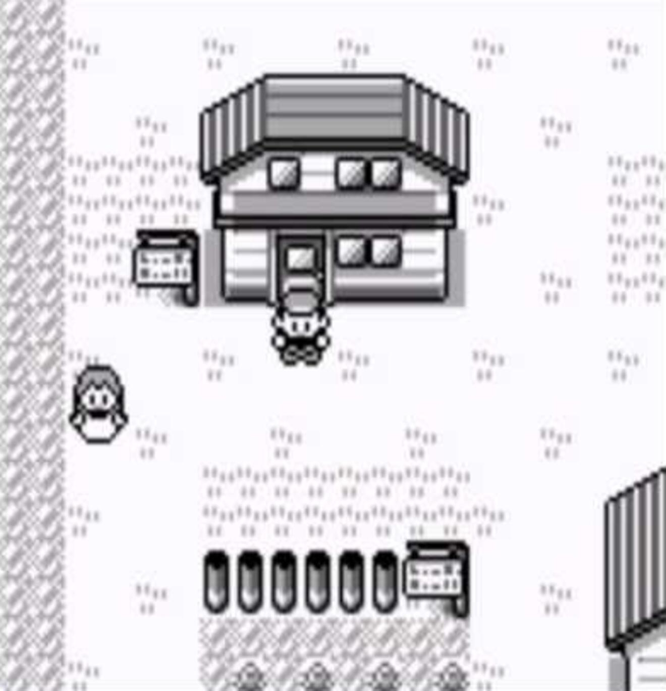

The birth of Pocket Monsters
Start of a Legacy
Pokémon Red Version and Pokémon Blue Version are the first installments
of the Pokémon video game series to be released outside of Japan (1998 for
North America and 1999 for Europe). They are published by Nintendo and developed by Game Freak.
Their Japanese versions were called Pocket Monsters: Red and Pocket Monsters: Green,
and represent the true root of the franchise.
The games are supported by the Game Boy and an enhanced version for the same console,
Pokémon Yellow, was released soon after. This version includes several changes and
upgrades, while also following more closely the story of the homonymous
animated TV series Pokémon.
General Features

The games present similar features as other games from this generation. The player moves
in a 2D scrolling scenery while keeping a third-person view and an overhead perspective.
They are played on three main screens: the world in which the character moves; the battle
screen; the menu interface. The main selling point of Pokémon, in general, is the
concept of capturing creatures (called, unsurprisingly, Pokémons), training them, and
battling other trainers.
Pokémon Red Version and Pokémon Blue Version had a huge success, becoming the best-selling
non-bundled games for the Game Boy (despite being released towards the end of the console's lifespan).
The games' release marked the beginning of what would become a pillar in the gaming
industry and a multibillion-dollar franchise.
The Origin of a Genre
A New Spin on RPGs

Pokémon Red and Blue present the usual traits of a Role-Playing-Game (RPG in short) but introduce a new level of depth. The main character isn't in fact the one fighting or jumping into action. This role is given to the (maximum) 6 monsters, called Pokémons, that you bring along your journey in this 2D-world. In these versions of the game, there are 151 available creatures, waiting only to be found. These companions can level up, learn new moves, evolve, and grow attached to you. Each Pokémon has determined stats that improve during the progression of the game. The battles introduce a complex system of damage calculation which gains additional depth by combining elemental weaknesses, defense and attack values, and also RNG (random number generator). The existence of all these factors allows a pretty much infinite replayability, making the game feel always new. Another great addition is the possibility to communicate between consoles using a cable (link cable), which allows us to trade Pokémons with other players.
The exemplar Plot
The story, setting, and progression of these first versions of the game set the standard for all future versions to come. Pokémon Red Version and Pokémon Blue Version take place in the region of Kanto, an actual region in Japan, and the layout of the cities and roads pushes the player to progress following a certain path. The player begins in their hometown, Pallet Town. Through interaction with many NPCs (non-playable characters), the objective of our travels becomes clear: beat all 8 gyms (which can be considered local bosses) and eventually beat the elite 4 (the four strongest trainers of the region) to then become champion.